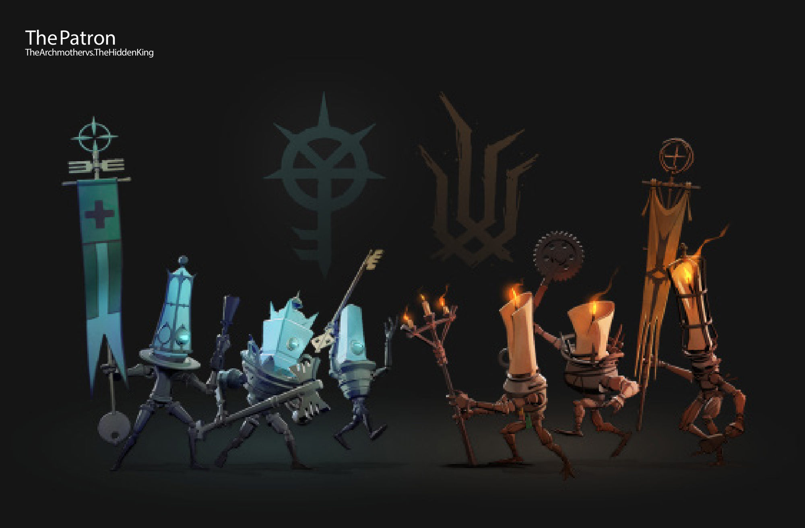
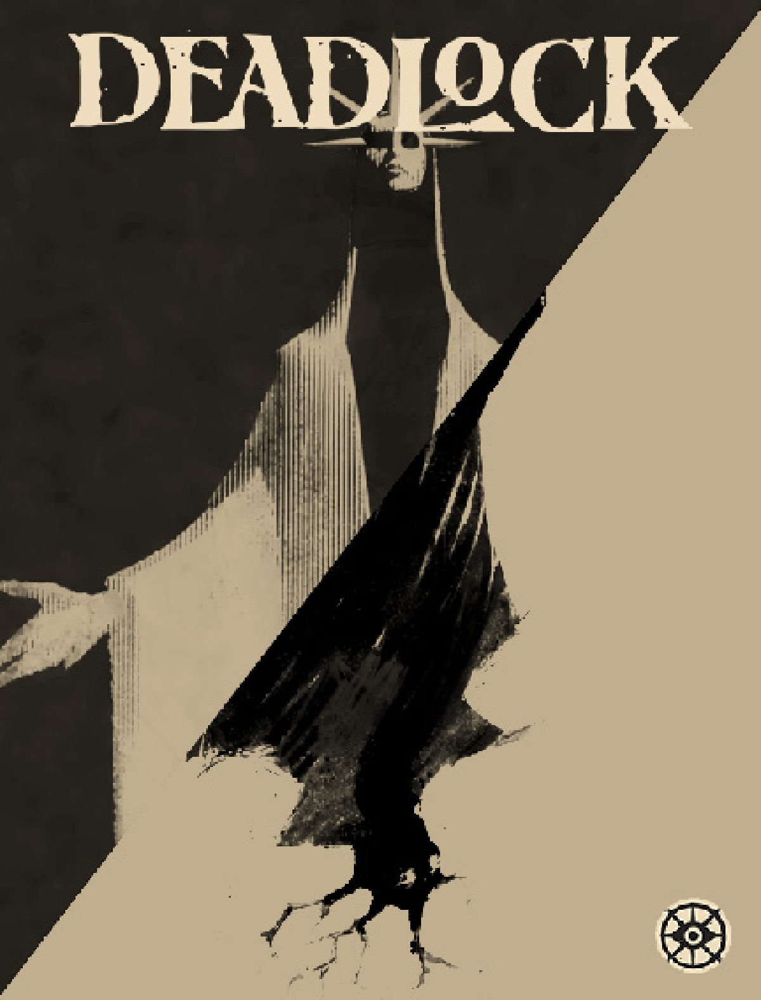
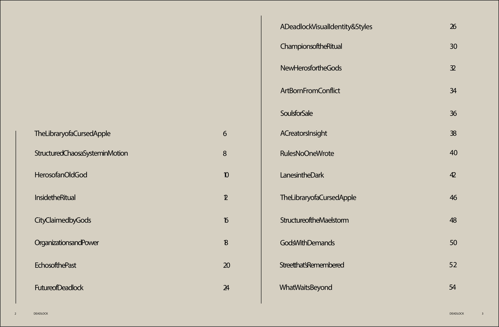
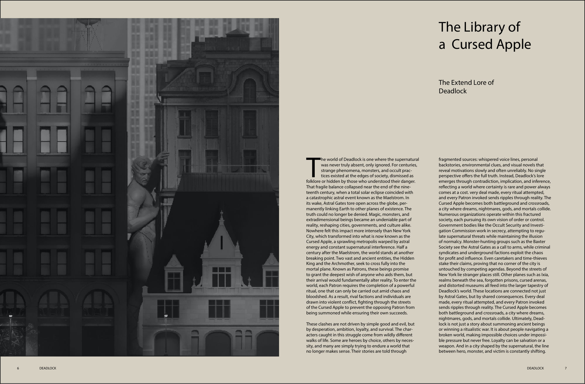
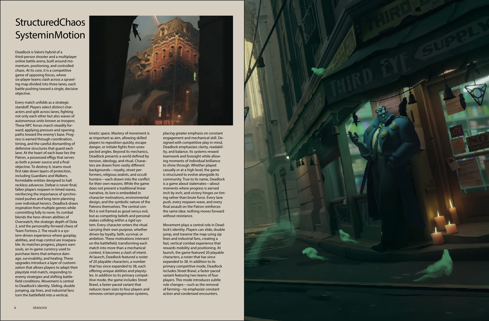
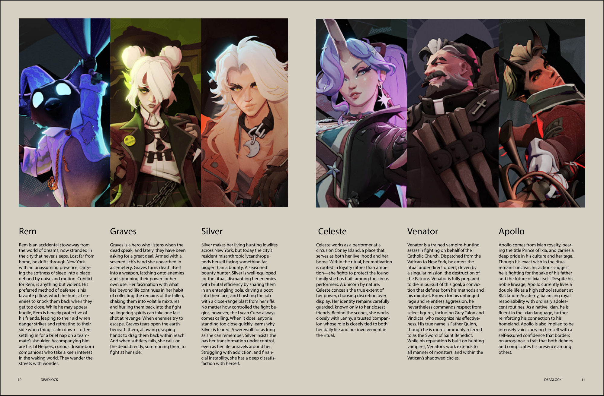
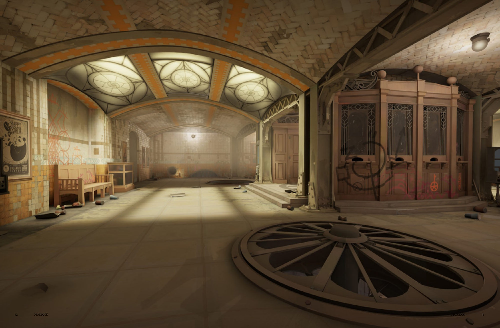

The goal was to translate Deadlock's established identity into an editorial format that feels aligned to its world rather than separate from it, editorial design, typography, and visual systems built from the game's own language.

Applications: InDesign, Illustrator, Photoshop

Self-initiated concept project for portfolio purposes. Not affiliated with or endorsed by the Deadlock team or Valve.
An editorial magazine that translates the visual system of Valve's game Deadlock into print, built under the game's own brand guidelines.
The goal was to translate Deadlock's established identity into an editorial format that feels aligned to its world rather than separate from it, editorial design, typography, and visual systems built from the game's own language.

The publication opens with a restrained table of contents, reinforcing hierarchy and typographic structure before moving into a full-spread introduction.


To align closely with the game's graphical identity, the same typefaces carry their original roles: Forevs appears in headlines and standalone moments, prioritizing tone over pure readability, while Noto Sans handles body copy for clarity across longer passages.


A 12-column grid structures the entire publication, allowing flexibility across two-, three-, or four-column groupings while keeping rhythm and balance consistent.

The project brings together a background in psychology, typography, and layout design to reflect the intensity and controlled chaos of the original source.